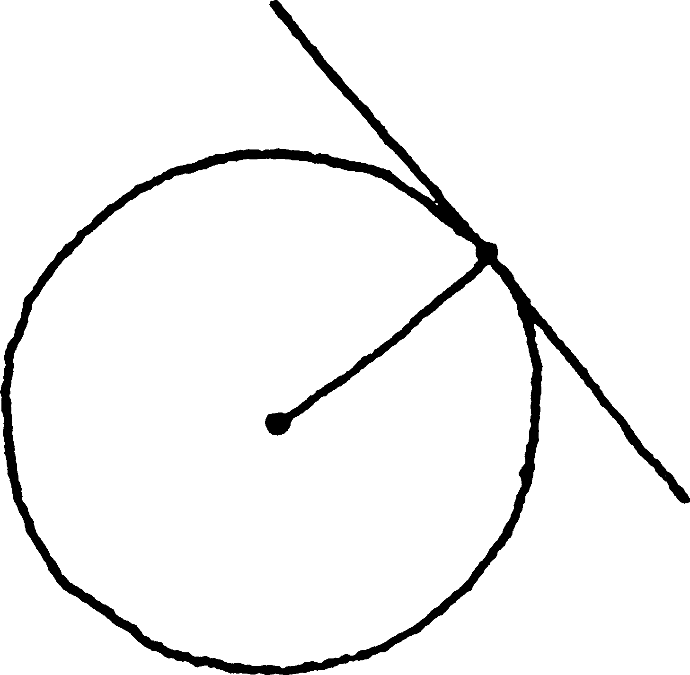
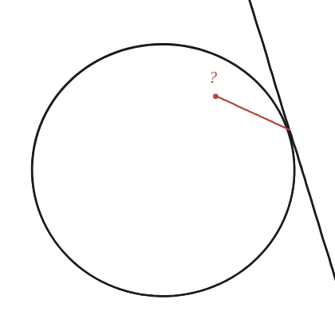
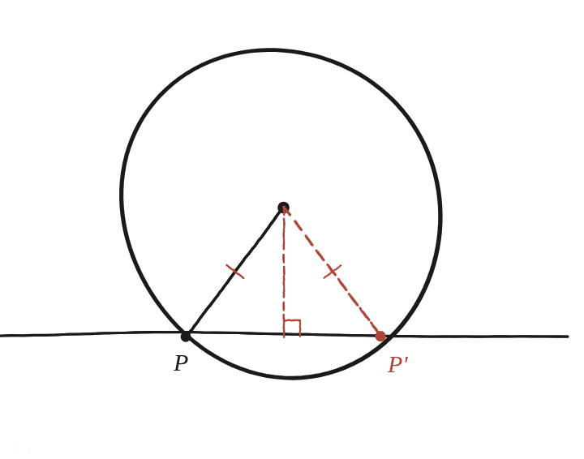

Per què la tangent a una circumferència és perpendicular al radi?

La demostració viu dins la definició
Una recta tangent a una circumferència és, per definició, una recta que la toca en exactament un punt —ni cap ni dos o més. Aquesta condició, que sembla només descriptiva, és tota la hipòtesi que cal per demostrar la perpendicularitat: per això costa veure-ho, la hipòtesi no sembla una hipòtesi.
Dibuixar el cas fals a posta
Suposant, per un moment, que el radi no fos perpendicular a la tangent: dibuixant-ho ben exagerat i tort, el radi arriba al punt de contacte P formant un angle diferent de 90°.

Baixar la perpendicular real
Des del centre O, es baixa la perpendicular real fins a la recta, i es marca on cau: aquest punt, P', és en general diferent de P (el punt de contacte suposat). Com que OP' és la distància més curta del centre a la recta (la perpendicular sempre ho és), i les marquetes confirmen que OP=OP' (tots dos són el mateix radi, si P fos realment el punt de tangència), resulta que P' també és a distància del radi de O: P' és sobre la circumferència.

La contradicció que ho tanca
Però P' també és, per construcció, sobre la recta —i si P' és alhora sobre la circumferència i sobre la recta, la recta toca la circumferència en dos punts (P i P'), no en un de sol. Això contradiu directament la definició de tangent. L'única manera d'evitar aquesta contradicció és que P i P' siguin, de fet, el mateix punt —cosa que només passa quan el radi ja era perpendicular a la recta des del principi.
La tangent és sempre perpendicular al radi al punt de contacte. Es demostra per reducció a l'absurd: si no ho fos, la perpendicular real des del centre cauria en un segon punt de la recta, igualment a distància del radi del centre —i per tant també sobre la circumferència—, contradient que la tangent la toca en un sol punt.
Comprovació
No hi ha xifres a comprovar aquí: la comprovació és repassar la pròpia demostració i assenyalar exactament on fa servir que la recta toca el cercle només una vegada. Si enlloc no s'hi fa servir aquesta condició, hi ha un forat —sense-hi, l'enunciat és fals (una secant, que talla en dos punts, no compleix la perpendicularitat).